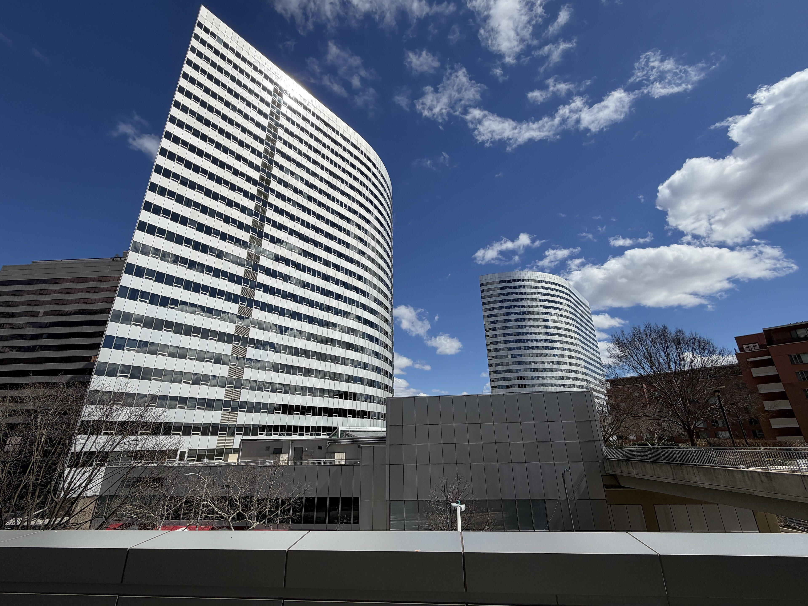
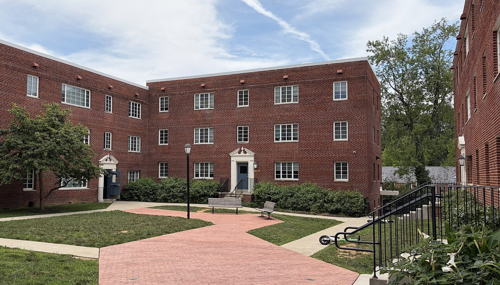

Problems caught early, budgets you can trust, costs kept down. Electric, gas, water, sewer and steam accounts for apartments, student housing, condominium associations, churches, schools, offices and government space across Virginia and the District of Columbia. Billing errors happen, but they are the exception; most of the money is in how a building uses and buys its utilities. We watch both, every month, starting with a free check of your past bills.
Billing errors happen, but they are the exception. The money that repeats is in demand peaks, leaks, usage that drifts upward and supply pricing, so our main service watches every bill, every month. The free check of your past bills is how clients start.
Our main service, and optional. Each new bill is obtained the day it issues and checked against the tariff and against the same period of prior years. A one-page note per building each month says what changed, why, in dollars, and the action recommended: demand peaks, leaks, usage drift, estimated reads and supply contracts coming up for renewal, with the year to date against budget. A flat monthly fee per building, or per account for campuses and portfolios, quoted after the free check. Suitable for purchase-card procurement.
Twenty-four to thirty-six months of bills for every account in a building, checked against the applicable tariff and supply contract: meter readings, demand, rate classification, taxes, credits, payments and balances. A written report is delivered within 7 days of receiving the bills. There is no charge, and it shows you what monthly analysis would watch for.
Where an error is found, we prepare the claim with the supporting arithmetic and tariff citation, submit it under your authorization, and follow the utility until the credit posts. You approve every submission. Our fee is 20% of amounts actually recovered for monthly-analysis clients, or 33% for clients who decline monthly analysis, invoiced after the credit appears.
Confirmation that each account sits on the most favorable available rate schedule and that supplier invoices conform to contract pricing, term and pass-through provisions. Performed as part of every audit and repeated at each tariff revision.
Most bill review compares this month's total with last month's. We never start from the total. Each bill is broken into its lines the day it issues, each line is rebuilt from the meter reads and the published rate, and every change is traced to one of four causes and stated in dollars before a person reviews it. The only input is the bills your utilities already produce. Nothing is installed.
The same four steps run on the historical audit and on every new bill under monthly analysis. Finding 1 in the worked example below was caught by step two.

Apartment communities and student housing, property portfolios, condominium associations, restaurants, retail, private schools and nonprofits. Master-metered water, sewer and stormwater charges are worth watching closely. For apartment and student housing owners.
Campuses with hundreds of accounts, central plants, cooling towers and sewer credits, and tax exemptions that are easy to lose when accounts change.
Agency headquarters, field offices and leased space. Tax-exempt status, purchase-card procurement and multi-account buildings all need careful tracking. SAM.gov registration in progress.
Monthly analysis is our main service, and it is optional. It is a flat fee per building, quoted after the free check. If you would rather not take it, the free check stands on its own and our only charge is a share of any refund it recovers. Nothing is ever charged on future savings, which some contingency audit firms take a cut of for a year or more.
Every bill checked within two business days of issuing, a same-day alert when something needs action, and a one-page note each month on what changed, why, in dollars, and what to do, with a live dashboard, budget against actual and a year-end summary. Priced per building, per month, by size and utility spend, and quoted after the free check, once we have seen the bills. 10% off from the fifth building, no setup fee, and pay a year in advance to get 12 months for the price of 10. How it works for apartment and student housing owners.
The first three months are billed at the price of one, invoiced when you start. If in any twelve months the refunds and avoided charges we document come to less than the fee, the next three months are free. From month four, pay monthly and cancel on thirty days' notice, or pay quarterly or yearly in advance, which runs to the end of the period paid for. The recovery share is 20% on everything, including the initial check.
Start by 1 December 2026 and your 2027 utility budget is included. We take on ten new buildings this quarter.
Twenty-four to thirty-six months of bills for every account in one building, checked and reported in writing within 7 days. No charge, whatever it finds, and you see what monthly analysis would watch for before deciding anything.
If you do not take monthly analysis, our one charge is thirty-three percent of refunds and credits actually received because of our findings, invoiced after the credit posts, never before. Nothing on amounts not recovered. With monthly analysis the share is 20%.
Eight billing errors worth catching on commercial utility bills, with the amount at stake in a representative case. They are not common, which is why our main service watches every bill as it arrives rather than waiting for a yearly audit. Illustrative: the amounts are invented to show the scale of each kind of error and are not recoveries by this firm.
| Where | Error | At stake |
|---|---|---|
| Electric | Demand billed at twice the metered peak | $23,400 in one month |
| Electric supply | Supply billed above the contract price for three months | $18,600 |
| Water and sewer | Sewer charged on pool and irrigation water that never reaches the sewer | $14,375 a year |
| Water and sewer | Account still billing after the building was sold | $11,200 |
| Water and sewer | Stormwater fee based on more paved area than the parcel has | $9,800 |
| Electric | Payment received in full but only part of it credited to the account | $6,400 |
| Electric | Sales tax charged to a tax-exempt account | $4,300 |
| Electric | Duplicate customer charge after a meter replacement | $1,665 |
| Customer charge | 185.00 |
| On-peak energy · 128,400 kWh × $0.0150 | 1,926.00 |
| Maximum demand · 3,120.0 kW × $15.00 | 46,800.00 |
| Off-peak energy · 162,300 kWh × $0.0150 | 2,434.50 |
| Delivery charges as billed | 51,345.50 |
The interval meter recorded a peak of 1,560.0 kW. The bill applied exactly twice that figure. Recomputed at the same demand rate, delivery charges are $27,945.50, an overcharge of $23,400.00 in a single month. A bill like this passes accounts payable because the total is plausible; it fails only when someone recomputes the demand line. This is the form every finding is delivered in: the bill, the tariff, the arithmetic.
The short answers owners and managers ask for first. Anything else: zak@commonwealthutilityaudit.com.
A utility bill audit compares a building's electric, gas and water bills with the meter readings and the utility's published rate (the tariff). Where a bill does not match, the difference is an overcharge that can be claimed back from the utility. Our free check does this for 24 months of past bills. Monthly analysis, our main service, then does it for every new bill as it arrives, and also tracks the demand, usage and pricing changes that are not errors but still cost money.
The check of your past bills is free. Monthly analysis, our main service, is optional: a flat monthly fee per building, quoted after the free check, with the first three months for the price of one. Monthly clients pay 20% of any refunds and credits actually received because of our findings; clients who decline monthly analysis pay 33%. Refund shares are invoiced after the credit posts, nothing is due if nothing is recovered, and nothing is ever charged on future savings.
Twenty-four months of bills for one building, as PDFs or utility portal exports, or a signed one-page letter of authorization so we can request them from the utility. We never need your portal password.
Written findings are delivered within 7 days of receiving the bills. Each finding shows the arithmetic and the tariff it is based on, and you approve every claim before it is filed.
Virginia and Washington, DC, for any electric, gas, water or sewer utility. Each bill is recomputed from that utility's own published rates, whichever utility it is.
Typical errors include demand charged on a misread or doubled meter reading, accounts on the wrong rate schedule, months of estimated reads followed by a catch-up bill, late fees charged on bills the utility later corrected, sales tax on tax-exempt accounts, duplicate charges after a meter replacement, and sewer charged on water that never reaches the sewer, such as cooling-tower, pool or irrigation water.
Owner-paid apartment and student housing communities, commercial buildings, higher education and healthcare campuses, and government buildings, from a single property to a portfolio.
No. Billing and submetering companies pay the bills and pass costs to residents. We analyse the owner's own utility bills every month, so the work sits alongside whatever billing system you already use.
No. The back-audit is a one-off and free. Monthly analysis is optional. The first three months are billed at the price of one. After that it is billed monthly, and can be cancelled on thirty days' notice, or quarterly or yearly in advance, running to the end of the period paid for.
It is priced per building, per month, based on the building's size and utility spend, and quoted after the free check, once we have seen the bills. 10% off from the fifth building, and no setup fee. The first three months are billed at the price of one, and if the refunds and avoided charges we document in any twelve months come to less than the fee, the next three months are free.
Commonwealth Utility Audit is a small, independent firm with one job: making sure the utility bills its clients pay are right. Bills are read automatically the day they issue, recomputed to the cent against the published tariff, and reviewed by a person before anything reaches you.
Mr. Zaloom founded the firm and built the automated bill-reading and tariff-recomputation tools it uses. He serves clients across Virginia and the District of Columbia.
He is a student pilot, which the firm mentions only because the temperament it requires, checklists, instruments, and numbers that reconcile, is the temperament this work requires.
Half an hour is enough to talk through what monthly analysis would watch for in your building and whether a free check is the right first step. If it is, you send twenty-four months of bills or sign a one-page letter so we can get them, and written findings follow within 7 days.